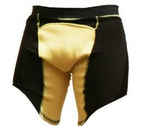
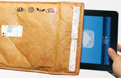
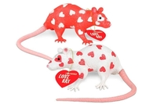
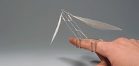

Wed, 07 Mar 2012 10:20:37 +0000
Blast Boxers, ropa interior anti-balas
Blast Boxers, ropa interior anti-balas
Como decía el malo del spaguetti western en que salía Clint Eastwood, "Si quieres matar a alguien, apúntale al corazón", pero hoy en día, con los chalecos antibalas, tendría que decir "Si quieres matar a alguien apúntale a la cabeza". Continue reading.
 Como decía el malo del spaguetti western en que salía Clint Eastwood, "Si quieres matar a alguien, apúntale al corazón", pero hoy en día, con los chalecos antibalas, tendría que decir "Si quieres matar a alguien apúntale a la cabeza". Y podríamos rematar : "pero si quieres joderlo, dispárale a las pelotas".
Como siempre, la realidad supera a la ficción, y se ha creado esta ropa interior antibalas, los Blast Boxers. Protegen las partes nobles de balazos y, lo que parece más importante, la arteria femoral, ya que un corte en esa arteria desemboca en una rápida muerte a causa de la pérdida de sangre. Pero ¿es realmente más importante? En una encuesta entre los soldados preguntando qué preferían salvaguardar, si su arteria femoral o su miembro viril, el 95% prefirieron el miembro viril, y la gran mayoría añadió "¿La arteria femo qué?"
La prenda está confeccionada con un tejido de kevlar en dos capas y sustituye a la ropa interior tradicional. No se si en la parte superior llevará un ribete con el nombre, podría ser un bonito trabalenguas: Kevlar Calvin Klein. Tampoco sabemos si las tropas llevarán los pantalones medio bajados para que se puedan ver.
Parece ser que no lleva corte lateral para poder orinar, así que te los tienes que bajar dejando tu anatomía doblemente expuesta a las heridas y al cachondeo eterno "¿Te acuerdas de aquel soldado que llevaba calzoncillos antibalas y lo mataron cuando estaba con los pantalones bajados?
Visto en Coolest Gadgets
¿Algo que comentar? [0] Tags: antibalas, calzoncillos, ropa interior
 QueLoVendan
QueLoVendan La tienda de gadgets y regalos originales - Cupón dto. 5% ->
SOY_FAN_DE_NPC
Tue, 06 Mar 2012 14:53:26 +0000
Funda sobre de correos, ahora para iPad y tablets
Funda sobre de correos, ahora para iPad y tablets
Hacía tiempo que esperábamos a la sucesora de la exitosa funda-sobre para portátiles y, por fin, ya está aquí: la versión para iPad y tablets se llama Undercover Tablet Sleeve. Al igual que su hermana mayor, esta funda con forma Continue reading.

Hacía tiempo que esperábamos a la sucesora de la exitosa funda-sobre para portátiles y, por fin, ya está aquí: la versión para iPad y tablets se llama Undercover Tablet Sleeve.
Al igual que su hermana mayor, esta funda con forma de sobre de correos tradicional tiene todo tipo de detalles que ayudan a camuflar su valioso contenido... Está un poco arrugado, tiene una etiqueta con una dirección ficticia y diversos sellos de correo.
Su tamaño de 28 x 23 x 0.5cm lo hace adecuado para la gran mayoría de tabletas del mercado. Está acolchado y realizado en Tyvek, un material plastificado que parece papel pero es prácticamente irrompible.

¿Algo que comentar? [0] Tags: Android, correos, fundas, ipad, ipad2, sobres, tablet
Tue, 06 Mar 2012 08:00:03 +0000
Edredón con desayuno incluido
Edredón con desayuno incluido
Lo que yo entiendo por desayuno incluye una miserable tostada, un par de cafés y el vil primer cigarrillo del día con su correspondiente mareo. Una vez transcurridas dos horas, el despertado se atreverá a balbucear e intentar moverse escogiendo Continue reading.

Lo que yo entiendo por desayuno incluye una miserable tostada, un par de cafés y el vil primer cigarrillo del día con su correspondiente mareo. Una vez transcurridas dos horas, el despertado se atreverá a balbucear e intentar moverse escogiendo una dirección entre tres posibles: retrete, sofá o vuelta a la cama. En cualquiera de ellas se volverá a quedar dormido.
Dicen por ahí que hay otras variantes del desayuno que implican alimentarse y ser persona. Una de ellas es la que consta de crepes, mantequilla, sirope y una alfombrilla de panceta. Personalmente, yo soy más de la primera clase, pero debo reconocer que el edredón es hermoso. Y práctico: si vomitas encima nadie notará la diferencia.
Visto en Next Gadgets
¿Algo que comentar? [2] Tags: cama, comidas, desayunos, edredones
Mon, 05 Mar 2012 11:14:47 +0000
Rata de San Valentín
Rata de San Valentín
¿Ya no sabes lo que regalar a tu pareja por San Valentín? ¿Se te han agotado las ideas para sorprender a tu amante? ¿Quieres terminar con tu relación lo antes posible? ¿Sembrar dudas sobre tus sentimientos? No busques más, Love Continue reading.
¿Ya no sabes lo que regalar a tu pareja por San Valentín? ¿Se te han agotado las ideas para sorprender a tu amante? ¿Quieres terminar con tu relación lo antes posible? ¿Sembrar dudas sobre tus sentimientos?
No busques más, Love Rat es una figura de plástico de 10 centímetros que representa una rata pintada con un estampado de corazones rojos y con un bonito collar con forma de corazón a juego.

Un detallazo para terminar con una relación estable. Uno de los interesantes motivos por los que publico semejante muñeco es el juego de palabras en inglés que tiene Love Rat (persona que ha engañado a su pareja con otra un par de veces).
Encantador.
Visto en Neatorama.
¿Algo que comentar? [2] Tags: juguetes, plástico, ratas
QueLoVendan La tienda de gadgets y regalos originales - Cupón dto. 5% ->
SOY_FAN_DE_NPC
Sun, 04 Mar 2012 09:00:29 +0000
Anillos mímicos
Anillos mímicos
Los pájaros siempre han sido la envidia del hombre. Porque pueden volar, porque no pagan hipotecas y porque dan de comer a sus crías regurgitando la comida, con el ahorro que eso supone para la economía doméstica. Lo de estamparse Continue reading.

Los pájaros siempre han sido la envidia del hombre. Porque pueden volar, porque no pagan hipotecas y porque dan de comer a sus crías regurgitando la comida, con el ahorro que eso supone para la economía doméstica. Lo de estamparse contra las ventanas no es algo tan envidiable pero, hey, nadie es perfecto.
Dukno Yoon es un enamorado de los pájaros y del vuelo en general. Con los anillos que ha construido pretende imitar el vuelo de los pájaros y que uno se quede fascinado mirándose el dedo durante horas.
Ahora bien, ¿pone esto en peligro a la cetrería? No necesariamente. Desde luego, es más barato alimentar a un anillo que a un águila imperial, pero a la hora de cazar los anillos no son tan eficientes. A no ser que te quieras casar con la presa, claro.
Obsérvalo en funcionamiento en Colossal
¿Algo que comentar? [6] Tags: alas, anillos, pájaros, pluma